原156＋真实事件50，共206场，0拟合。同一空间60m范围内K7谱形邻居与相应K7局地尺度，沿用联合材料种子及软锚；只仲裁COMPACT新增扣量。六个继承固定检查加大庆/阳泉固定夏季定位场。每场各法同RAW色限、同原支持。
结果与局限 · 冻结机制 · 必要指标 · 固定位置与极值结果
原30平均新增扣量略弱于VISIBLE，地图交格平均扣量反而更强。保留为并列候选，未替换默认。
旧GRAPH剩余新增扣量 0.828 → 局地60m 0.840 μg/m³；实际PM变化 -0.012。
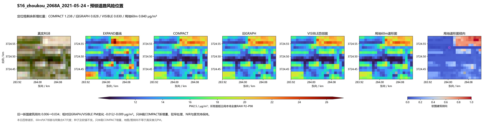
旧GRAPH剩余新增扣量 0.137 → 局地60m 0.094 μg/m³；实际PM变化 +0.042。
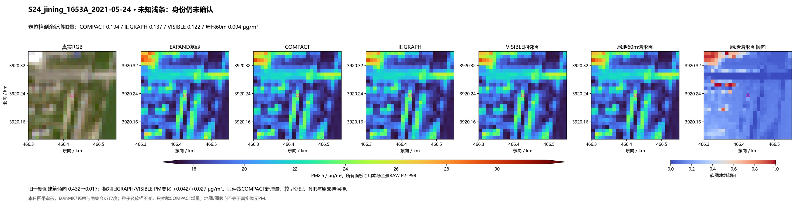
旧GRAPH剩余新增扣量 1.505 → 局地60m 1.512 μg/m³；实际PM变化 -0.007。
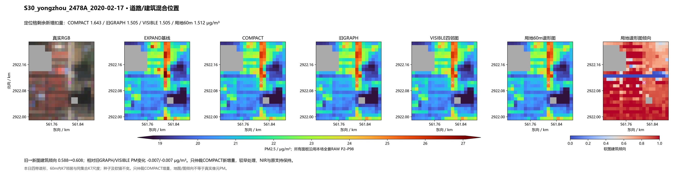
旧GRAPH剩余新增扣量 0.674 → 局地60m 0.801 μg/m³；实际PM变化 -0.127。
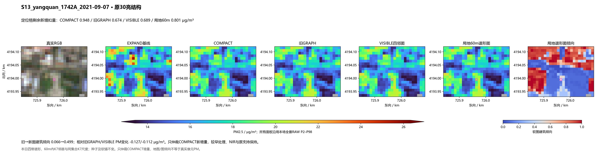
旧GRAPH剩余新增扣量 0.612 → 局地60m 0.585 μg/m³；实际PM变化 +0.027。
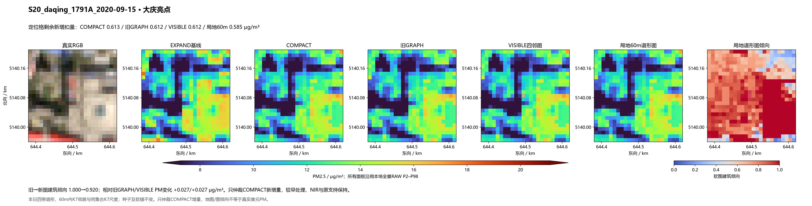
旧GRAPH剩余新增扣量 0.245 → 局地60m 0.281 μg/m³；实际PM变化 -0.036。
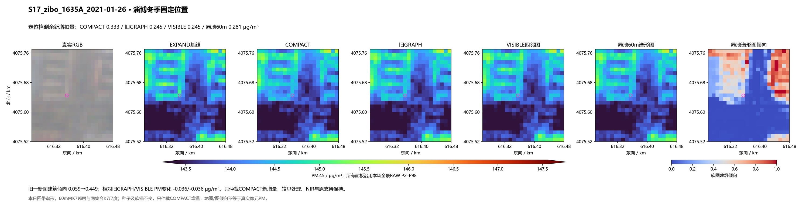
旧GRAPH剩余新增扣量 0.422 → 局地60m 0.458 μg/m³；实际PM变化 -0.037。
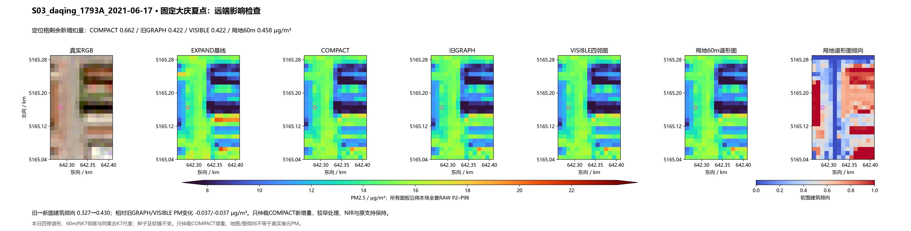
旧GRAPH剩余新增扣量 0.348 → 局地60m 0.347 μg/m³；实际PM变化 +0.001。
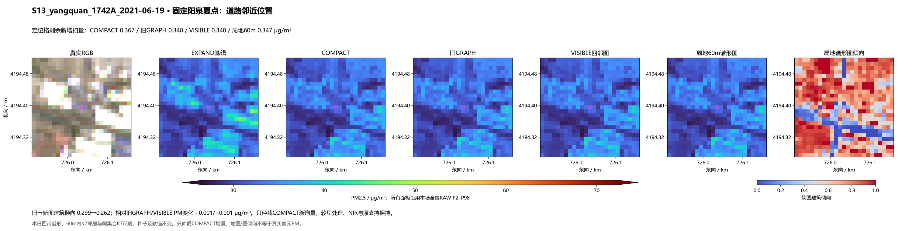
相对VISIBLE实际PM变化 -0.640671 μg/m³。事后检查，不参与算法。
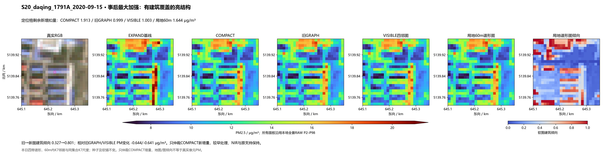
相对VISIBLE实际PM变化 -0.355246 μg/m³。事后检查，不参与算法。
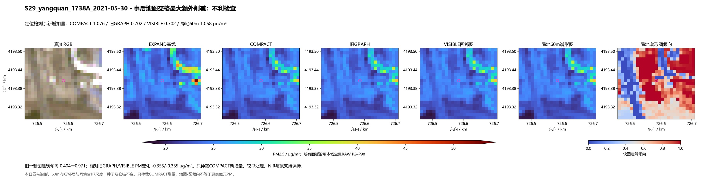
相对VISIBLE实际PM变化 +0.705872 μg/m³。事后检查，不参与算法。
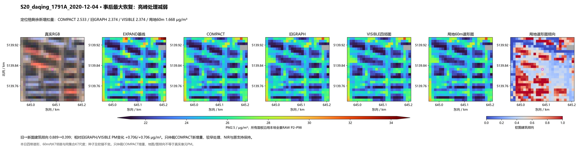
相对VISIBLE实际PM变化 -0.201470 μg/m³。事后检查，不参与算法。
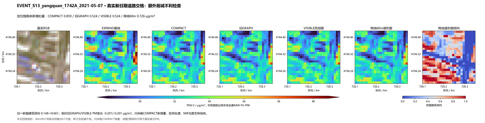
相对VISIBLE实际PM变化 +0.360310 μg/m³。事后检查，不参与算法。
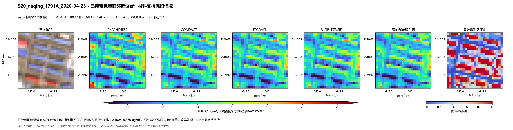
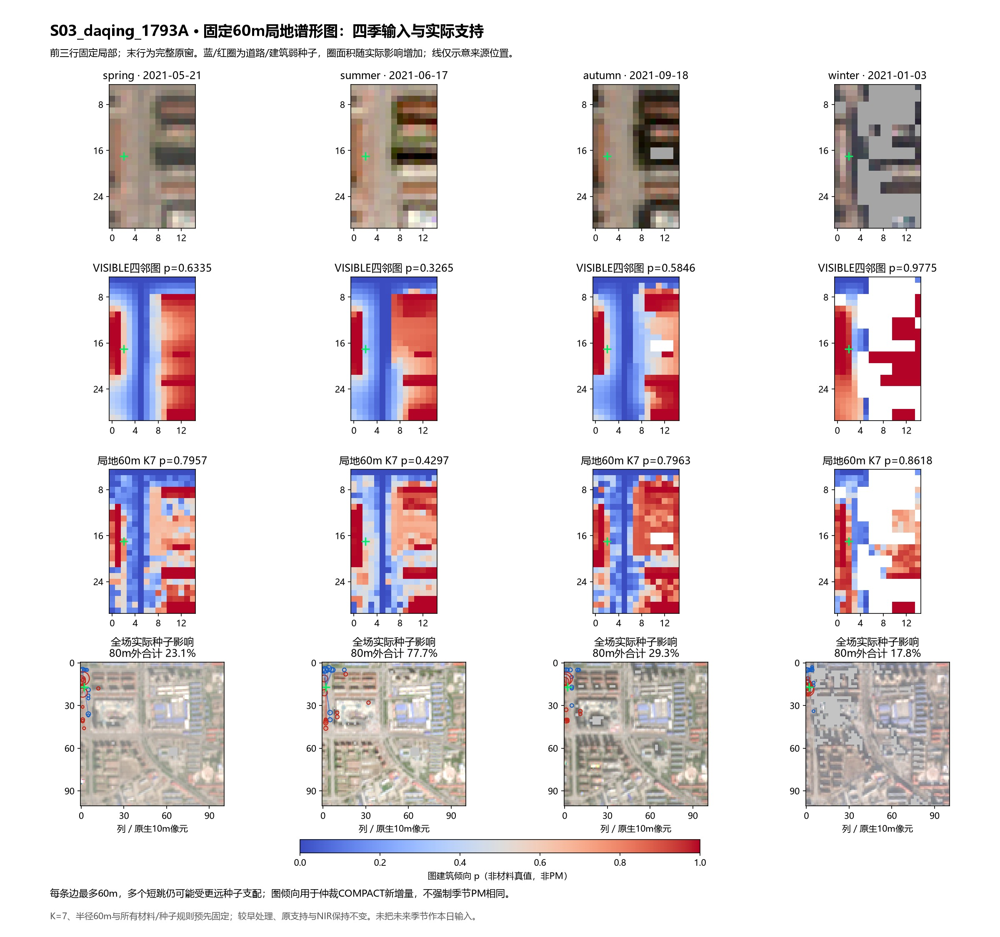
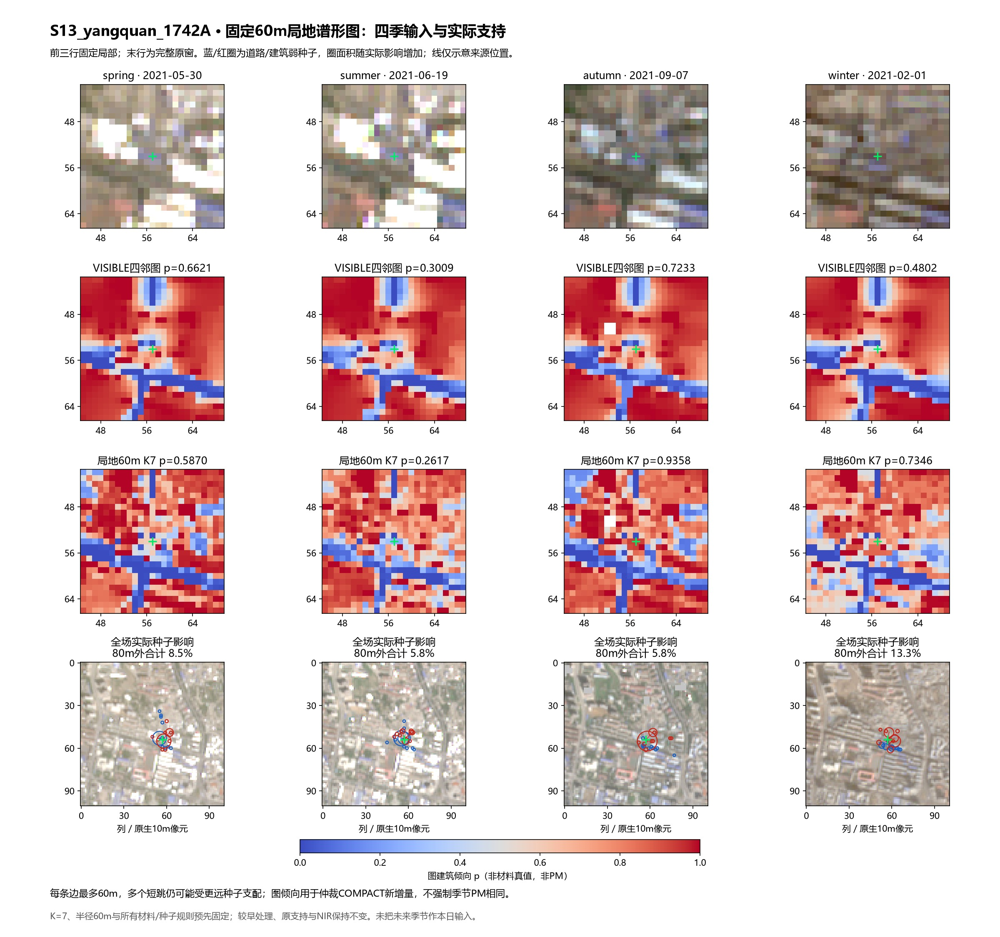
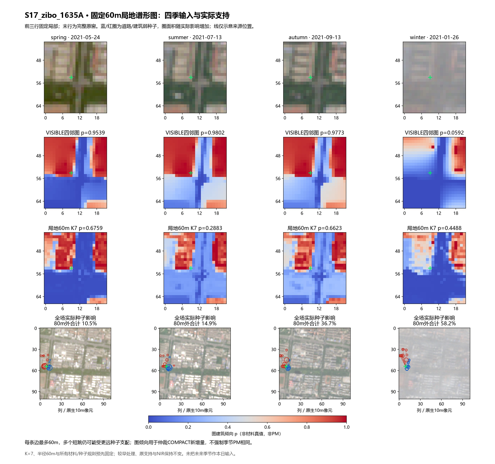